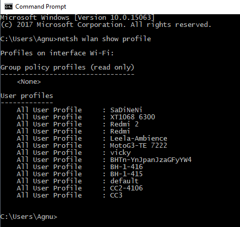
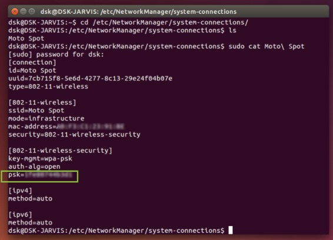

视窗
命令提示符，也称为cmd.exe或cmd（在其可执行文件名之后）对于喜欢命令界面而非图形UI的人来说是一个很棒的工具。 可以通过CMD访问图形用户界面中仍未实现的许多功能。 在本文中，我将分享如何使用CMD查找所有连接设备的密码。
在进一步说明之前，您应该知道，无论何时连接到Wi-Fi网络并输入密码，Windows都会创建该Wi-Fi网络的WLAN配置文件。 这些WLAN配置文件与Wi-Fi配置文件的其他所需详细信息一起存储在计算机中。
我们稍后可以通过简单地使用Windows CMD来发现这些WLAN配置文件。 您可以使用简单的命令找到所有连接的网络及其密码。 这些命令还可以显示当前未连接但之前已连接的网络的Wi-Fi密码。 因此，即使您处于脱机状态或连接到任何其他网络时，它也能正常工作。
注意：以下命令仅由管理员执行
1）打开命令提示符并以管理员身份运行它
2） 键入“netsh wlan show profile” - 它将显示之前连接到计算机的所有Wi-Fi配置文件

2）键入此命令不带引号“netsh wlan show profile SaDiNeNi key = clear”

应采取的预防措施：
1）键入netsh wlan show profiles（它将显示连接的不同wi-fi）
2）键入netsh wlan删除配置文件名称=“ProfileName”（删除所需的配置文件）
LINUX
要通过命令行查找保存的wifi密码，请按照下列步骤操作：登录到Ubuntu并打开“终端”，然后输入这些命令。
1）键入cd / etc / NetworkManager / system-connections / - 它包含Wi-Fis的配置文件
2）输入ls -a
现在，您将获得保存在PC上的wifi网络的名称。 现在输入以下命令，其中包含您要查找密码的wifi网络的名称。 您可以在“psk”=“PASSWORD”找到您的密码。
3）sudo cat WIFI_SSID_Name

应采取的预防措施：
1）sudo ls -l / etc / NetworkManager / system-connections /
要列出所有文件，找到要删除的网络后，请使用以下命令将其删除：
2）sudo rm / etc / NetworkManager / system-connections / NETWORK_NAME